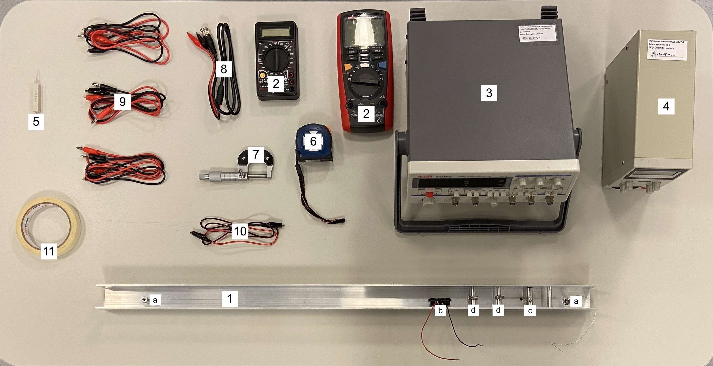
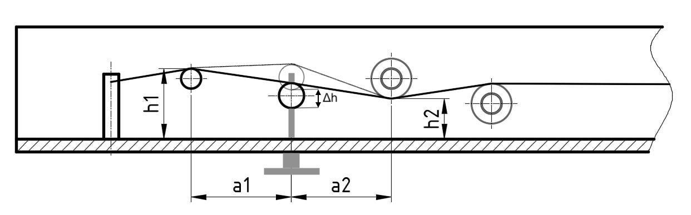

Y23 (2023) — English translation
Guitar string is made from special hardened high carbon steel (sometimes called "music wire") to provide the required high tensile strength. This work is devoted to studying the properties of such a string and their changes associated with changes in its temperature.

Equipment: Installation with a tensioned string and an electromagnetic sensor (a. string fastenings, b. electromagnetic sensor, c. tensioner cylinder, d. bearings) Multimeter - 2 pcs (red, black) Alternating current generator DC power source 1 Ohm resistor Tape measure Micrometer BNC crocodile wire - 1 pc Banana crocodile wire - 6 pcs Wire crocodile crocodile - 1 piece Masking tape
The length of the string, and therefore its tension, can be changed using a metal screw located at the bottom of the installation body. As it rotates, the metal cylinder attached to it moves vertically, further stretching the string. Further, the string is considered to be in its original state if the cylinder does not touch the string. In the initial state, the string is already tensioned. The additional tension that will be created when performing work is associated with additional elongation of the string.
The following quantities can be used in all parts of the problem: Length of the string between the attachment points in the initial state $L = (68.0 \pm 0.2) \ см$; The pitch of the screw stretching the string is $0.70 \ мм/оборот$; Linear density of string $\Lambda = 0.778 \ г/м$; Temperature coefficient of resistance $\beta = 2.0 \cdot 10^{-3} \ К^{-1}$. Further, unless otherwise stated, when referring to string length, we mean the portion of the string located between the attachment points.
Further, unless otherwise stated, when referring to string length, we mean the portion of the string located between the attachment points.
The first step to finding Young's modulus is to relate the height of the tensioner cylinder to the additional elongation of the string.
Rice. 1. Schematic illustration of the installation (side view)

Further, the following values can be used for calculations: $$ h_1 = 28 \ мм; \\ h_2 = 16 \ мм; \\ a_1 = a_2 = 40 \ мм. \\ $$
Let $E$ be the Young’s modulus of the string material, $l$ be the length of the part of the string located between the attachment points in an unstretched state, $L'$ be the length of the same part in a tense state (for example, in the initial state $L' = L$).
Turn on the sound generator. Set the voltage amplitude $20 \ В$ on it. Then, if necessary, the amplitude can be reduced. Make sure the generator is set to sine wave. Connect the generator leads to the sensor leads on the installation. Return the string to its original state.
Return the string to its original state.
By rotating the screw, ensure that the cylinder touches the string, but does not stretch it.
Notes: Be careful not to dislodge the cylinder from the screw axis. To do this, it is recommended to make no more than 10 revolutions. If necessary, you can apply masking tape to the installation and mark it.
It is known that metals tend to change their resistance and dimensions with changes in temperature. Let $l$ be the length of the string in an unstretched state, $d$ its diameter, $R$ the resistance, $l_0$, $d_0$, $R_0$ the corresponding values at room temperature $T_0$. For relatively small temperature changes (which are considered in this problem), the dependences $l(T)$, $d(T)$, $R(T)$ can be given by the formulas: $$ l(T) = l_0 (1+\alpha(T-T_0)); \\ d(T) = d_0 (1+\alpha(T-T_0)); \\ R(T) = R_0 (1+\beta(T-T_0)). $$Величина $\alpha$ называется коэффициентом линейного теплового расширения, $\beta$ — температурным коэффициентом сопротивления. Значение $\beta$ известно и указано в начале задачи. В данной части необходимо определить $\alpha$. Для нагрева струны через нее нужно будет пропускать постоянный ток. Подключать струну к цепи следует, используя вертикальные металлические стержни, на которых она закреплена. При таком соединении ток не будет проходить через металлический корпус.
Примечания: В течение всего эксперимента напряжение на струне не должно превышать $3 \В$. Показания источника могут быть неточными, что может значительно повлиять на полученные результаты. Мультиметры не разрешается использовать в режиме амперметра. Резистор при токах $\sim 1 \А$ heats up significantly. Be careful when measuring.
Return the string to its original state.
Note: To avoid too “wide” resonance, you can try changing the amplitude of the oscillator.
Source: https://pho.rs/p/3488